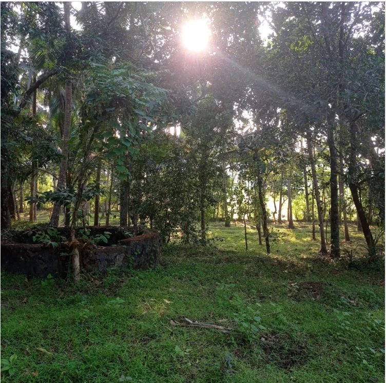
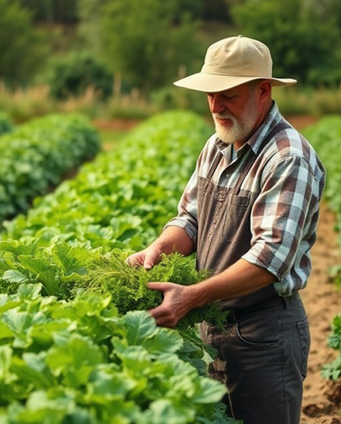

About Sun Green Farms
Sun Green Farms, as the name suggests, is a true gift of
nature—blessed with abundant sunlight and lush greenery.
It is home to a rich diversity of insects, birds, and
reptiles, all contributing to a balanced ecosystem and a
thriving microclimate.
Originally developed as a coconut grove, Sun Green Farms
has gradually evolved into a full-fledged eco-friendly
farm. Today, it nurtures a variety of fruit trees, along
with crops like nutmeg and banana, while carefully
preserving native varieties of mango and jackfruit.
Soil health lies at the heart of Sun Green Farms. Great
care is taken to protect and enrich the soil every
day—shielding it from harsh sun, wind, and rain—so that
every microorganism can thrive undisturbed.
Water conservation is an integral part of the farm, with
three ponds designed to harvest and retain water, ensuring
maximum self-sufficiency.
Adjacent to the farm, a dedicated food processing unit was
later built with a vision to provide people with
chemical-free, nutrient-rich products made directly from
our own harvests.


Sun
Green
Farms
Green
Farms
Why Choose Us
By choosing Sun Green Farms, you're not just supporting a
farm—you're becoming part of a movement that values
purity, ecology, and community. Together, we can reconnect
with nature and rediscover the goodness of food grown with
love and conscience.
-
Quality Organic Food
Every product is cultivated with care, ensuring purity, taste, and the goodness of nature in every bite. -
Chemical Free
Our crops are nurtured naturally, without the use of harmful chemicals or synthetic fertilizers. -
Clean & Green
Our commitment to sustainable farming means every crop is grown naturally.
Our Story
We honestly don’t remember when it all began. Perhaps the
seeds were always within us—a quiet desire to live an
organic life close to the soil and trees. The reasons for
those seeds to sprout could be many, but the strongest one
was that we both shared the same passion for this way of
living.
Like many, we often asked ourselves “what next in personal
life?” after years of routine—going to office every
morning, returning late in the evening, and spending
weekends on household chores. We spent most of our
corporate life in Bangalore, once known as one of the
cleanest, coolest, and greenest cities in India. Over
time, however, as the city grew with countless engineers
pouring in from all parts of the country, Bangalore slowly
started losing its charm.
At that point, we didn’t think too much about the changes
around us because we were deeply involved in terrace
gardening, our weekend passion. It was during this period
that we happened to read One Straw Revolution by Masanobu
Fukuoka—a book that touched us deeply and changed the way
we looked at farming and life itself. Soon after, we
discovered the works of Subhash Palekar and devoured all
his books on natural farming.
By then, our terrace had already transformed into a
vibrant “farm” with more than a hundred pots and automated
drip irrigation. We successfully grew bananas, tapioca,
beetroot, carrots, onions, lemons, oranges, chikku,
pomegranates, mint, Tulsi varieties, yam, tomatoes, and
even corn on our terrace.
But the city was changing faster than we could ignore.
With new buildings, shrinking green spaces, and traffic
that consumed our days, Bangalore was becoming unlivable.
Still, we carried on—until Covid arrived.
That was the turning point. Moving to our hometown wasn’t
a difficult decision anymore. Our son Aadityan, then in
8th standard, was already disconnected from his school
friends due to the pandemic, which made the transition
easier. Convincing him otherwise would have been
difficult—after all, Bangalore was the only home he had
known. For us, Rakesh and Bably, who were never
particularly “social beings” except with close friends and
neighbors, the shift felt like just a change of
workplace—still working remotely, with the same employers.
Sun Green Farms is the story of Rakesh & Bably and
Aadityan & his pets . Strangely enough, while neither of
us ever dared to touch a cat or dog before, Aadityan cares
for them as though he brought them into this world
himself.
Interestingly, the land for Sun Green Farms was bought
years before Covid, simply as a retirement investment. We
didn’t even visit it for more than five years. It was just
75 cents then, but slowly we added neighboring plots, and
today it has grown into 1.25 acres.
Story as of now is Rakesh resigned his Job and started
involving into farming seriously and Bably resigned her
Bangalore Job but still helping with monthly salary from
IT Freelancing job from home. Together, we have enrolled
in a beautiful Organic Farming Certification Course
offered by M.G. University through its Lifelong Learning
wing, guided by the renowned ecologist Shri K.V. Dayal.
Our next step is to continue with their Diploma in Organic
Farming.
Sun Green Farms is, and will always be, our journey toward
living an organic life—rooted in soil, guided by nature,
and inspired by love for simple living.
 Chat with us
Chat with us